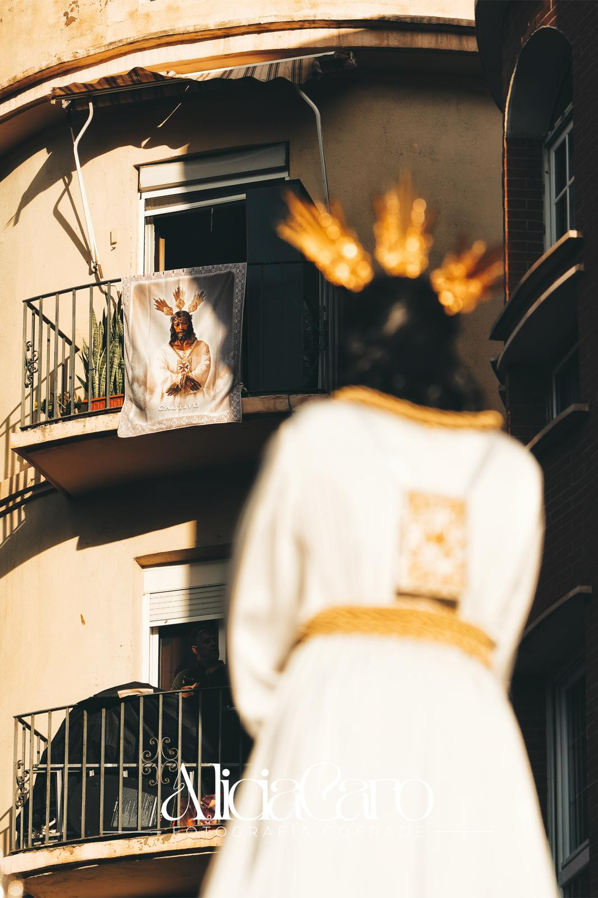

<div id="contenedor">
  <iframe
    id="video-fondo"
    src="https://www.youtube.com/embed/VIJrzWK4Ack?autoplay=1&mute=1&loop=1&playlist=VIJrzWK4Ack"
    frameborder="0"
    allow="autoplay; encrypted-media"
    allowfullscreen
  ></iframe>

  
<h1 class="titulo-seccion text-center fw-bold">Últimos Artículos</h1>
  <hr class="divider">
  @if(esUsuario || esCofradia){

  <div id="crearArticulo">
    <a class="btn btn-success" routerLink="/crear-articulo">
      Crear Nuevo Artículo
    </a>
  </div>

}


  <div id="diario">
    <app-lista-articulos
      [articulos]="articulos"
      [usuarios]="usuarios"
    ></app-lista-articulos>
  </div>


</div>
